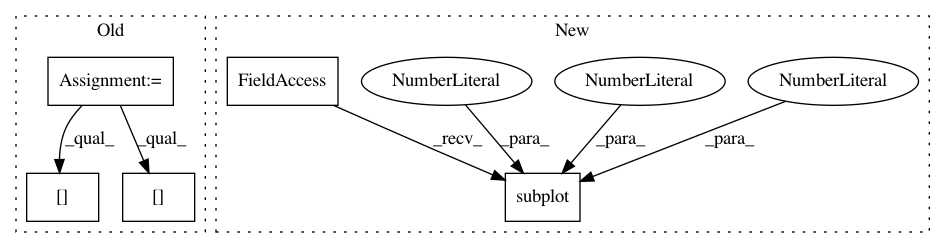

cf7d0bdc4133ea3248e054fa93aa2b5a6f8f2fca,doc/examples/compute_SNR_in_corpus_callosum.py,,,#,25
Before Change
ren = fvtk.ren()
cfa_crop = cfa[roi, ...]
evals = tenfit.evals[20:50,55:85, 38:39]
evecs = tenfit.evecs[20:50,55:85, 38:39]
//tensor_odfs = tenmodel.fit(data_small[roi]).odf(sphere)
fvtk.add(ren, cfa_crop)
After Change
import matplotlib.pyplot as plt
plt.figure("Corpus callosum segmentation")
plt.subplot(1, 2, 1)
plt.title("Corpus callosum")
plt.imshow((cfa[..., 0])[40, ...])
plt.subplot(1, 2, 2)
In pattern: SUPERPATTERN
Frequency: 4
Non-data size: 5
Instances
Project Name: nipy/dipy
Commit Name: cf7d0bdc4133ea3248e054fa93aa2b5a6f8f2fca
Time: 2013-09-11
Author: stjeansam@gmail.com
File Name: doc/examples/compute_SNR_in_corpus_callosum.py
Class Name:
Method Name:
Project Name: nipy/dipy
Commit Name: 749855e9d1b5bd1aa7b46db144503922fbc0a336
Time: 2013-08-06
Author: matthieu.dumont@usherbrooke.ca
File Name: doc/examples/brain_extraction_dwi.py
Class Name:
Method Name:
Project Name: rtavenar/tslearn
Commit Name: 322771495bde9200d365c8d536e0724f1075dff9
Time: 2017-06-20
Author: romain.tavenard@univ-rennes2.fr
File Name: tslearn/docs/examples/plot_dtw.py
Class Name:
Method Name:
Project Name: nipy/dipy
Commit Name: 6c524d66dcd30d98a0f0c991252a3be644fa58ef
Time: 2013-09-11
Author: stjeansam@gmail.com
File Name: doc/examples/compute_SNR_in_corpus_callosum.py
Class Name:
Method Name: